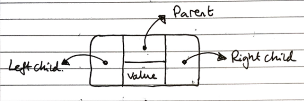

Trees (ADT)
Trees are “an abstract model of a hierarchical structure. A tree consists of nodes with a parent-child relation.”
*Data Structures and Algorithms in Java, Goodrich, Tamassia, Goldwasser
| Fundamental Operation | Value returned | Effect |
|---|---|---|
size() |
Number of nodes in the tree | - |
isEmpty() |
Whether the tree is empty | - |
iterator() |
An iterator for the tree | - |
positions() |
An iterable container of all nodes in the tree | - |
root() |
The root node | - |
parent(p) |
The parent of the node p |
- |
children(p) |
An iterable container of the children of the node p |
- |
numChildren(p) |
The number of children of the node p |
- |
isInternal(p) |
Whether the node p is an internal node (node with at least 1 child) |
- |
isExternal(p) |
Whether the node p is an external node (node with no children) |
- |
isRoot(p) |
Whether the node p is a root node (node without parent) |
- |
insert(p,e) |
- | Add a node of value e as a child of the node p |
update(p,e) |
- | Update the value of the node p to be e |
delete(p) |
The value of the node p |
Delete the node p |
The methods for insertion, deletion, and searching are more complicated, and so are outlined in more detail in the binary search tree section
Tree Traversals
There are various ways a tree can be traversed. Shown here is a figure of a binary tree.
In-order (Left, Root, Right). DBE A FCG
Pre-order (Root, Left, Right). A BDE CFG
Post-order (Left, Right, Root). DEB FGC A
Breadth First/Level Order. ABCDEFG
We will come back to breadth first traversal in a later topic (Breadth First Search). For now we will focus on the first 3.
In-Order Traversal
For every node, we print the left child, the node itself, then the right child. Since this is a recursive function, if we start at a node n, the algorithm will start from the left-most child of the tree, then that child’s parent then its sibling and on for the entire tree that the n is the root of.
Function inOrder(n)
if n != null
inOrder(n.leftChild())
Print n
inOrder(n.rightChild())
Note that the above algorithm applies only to binary trees, for a more general form of in-order traversal, there will need to be an additional definition of what makes a node a “left child”. This can either be that left child nodes have a smaller value than the parent/root, or left children are just the first m number of nodes etc.
Pre-order traversal
Each node is printed before its descendants, and descendants are taking in ascending order
Function preOrder(n)
if n != null
Print n
For each child m of n
preOrder(n)
Post-order traversal
Each node is printed after its descendants, and descendants are taking in ascending order
Function postOrder(n)
if n != null
For each child m of n
postOrder(n)
Print n
Binary trees (ADT)
Binary trees are a specialised tree where each node has at most two children, called left and right
| Fundamental Operations | Value returned | Effect |
|---|---|---|
left(p) |
The left child of node p |
- |
right(p) |
The right child of node p |
- |
sibling(p) |
The sibling of node p |
- |
Properties
A binary tree with \(n\) nodes, \(e\) external nodes, \(i\) internal nodes, and a height \(h\) has the properties
\[\begin{gather} e = i + 1 \tag1 \\\\ n = 2e - 1 \tag2 \\\\ h \leq i \tag3 \\\\ h \leq \frac{(n-1)}{2} \tag4 \\\\ e \leq 2^h \tag5 \\\\ h \geq log_2 e \tag6 \\\\ h \geq log_2 (n+1) - 1 \iff n = 2^{h+1} -1 \tag7 \end{gather}\]As mentioned earlier, Binary Trees by definition have a discrete middle node, and inherently support in-order traversal.
Implementations
There are two common concrete implementations of binary trees
- Linked structure
- Array based
Linked structure
In the linked structure implementation, each node is an object which stores its value, references to its child nodes (and sometimes a reference to its parent), as shown in the diagram below:

This has a linear space complexity irrespective of the balance of the tree, and has a lookup time of \(O(log_2n)\) for lookup operations.
Array based
In the array based implementation, node values are stored in an array, and their children can be found at indices based on arithmetic operations of their own index
- \[index(root) = 0\]
- If \(l\) is the left child of \(n\), then \(index(l) = 2 \cdot index(n) + 1\)
- If \(r\) is the right child of \(n\), then \(index(r) = 2 \cdot index(n) + 2\)
This can be very inefficient for unbalanced trees, for example, a tree which is just a “line” of nodes would grow with \(O(2^n)\) space, but it has a similarly good lookup time of \(O(log_2n)\)